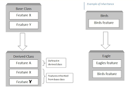

home
Basic concepts
Classes and Objects
Constructors and Destructors
Polymorphism
BASIC CONCEPTS OF OOP
1)
OBJECT:
Object is the collection of Run-time Entities present in the system. Objects and Classes take the memory space. Every Memory space has unique address assigned to it.
2)
CLASSES:
It is a collection of objects of similar types. e.g. Mango,Apple and Orange are the members of Class Fruit.
3)
ENCAPSULATION:
The wrapping up of data and functions into a single unit is known as Encapsulation.
4)
DATA ABSTRACTION:
Abstraction is the act of representing essential features without including the background details or explanation.
5)
INHERITANCE:
Inheritance is the process by which objects of one class acquires the properties of the objects of another class. It works on the property of 'Reusability'.
